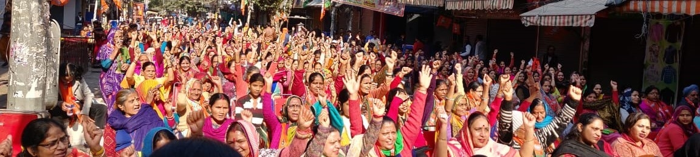
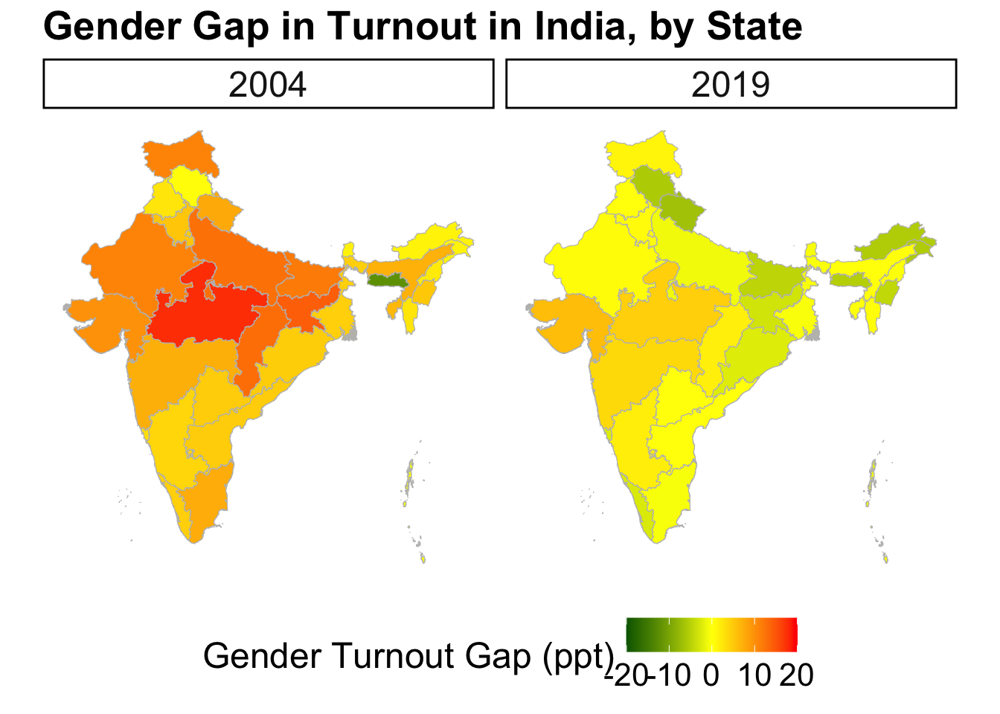
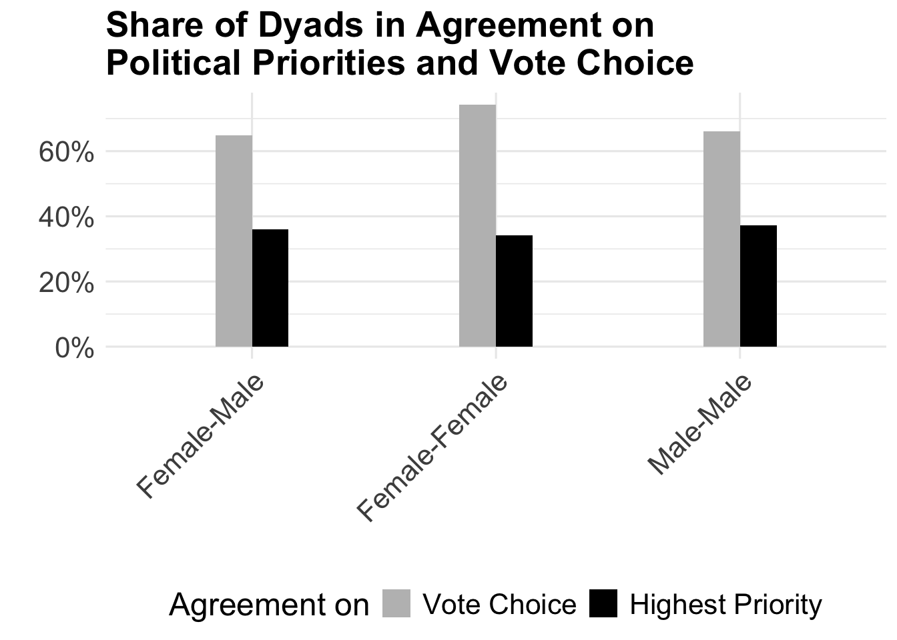
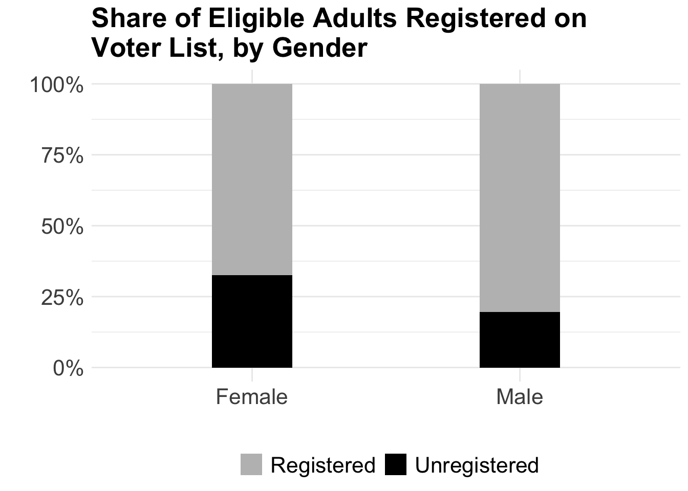
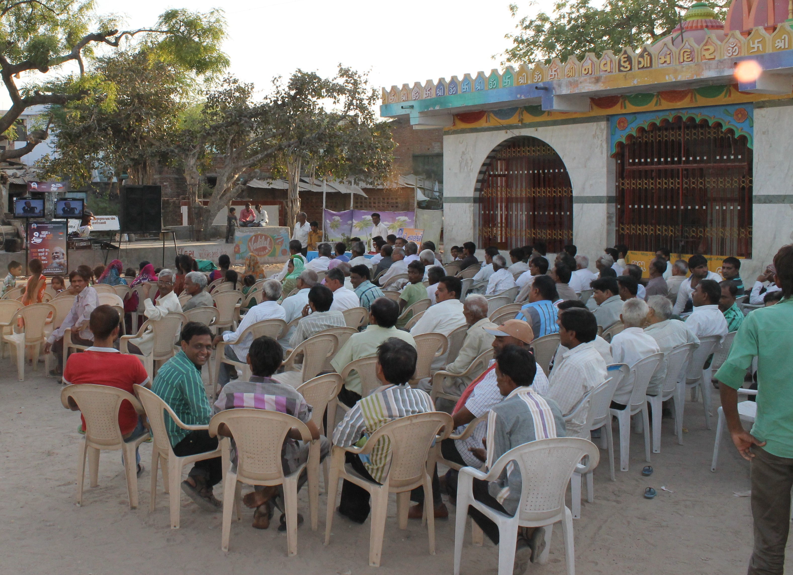
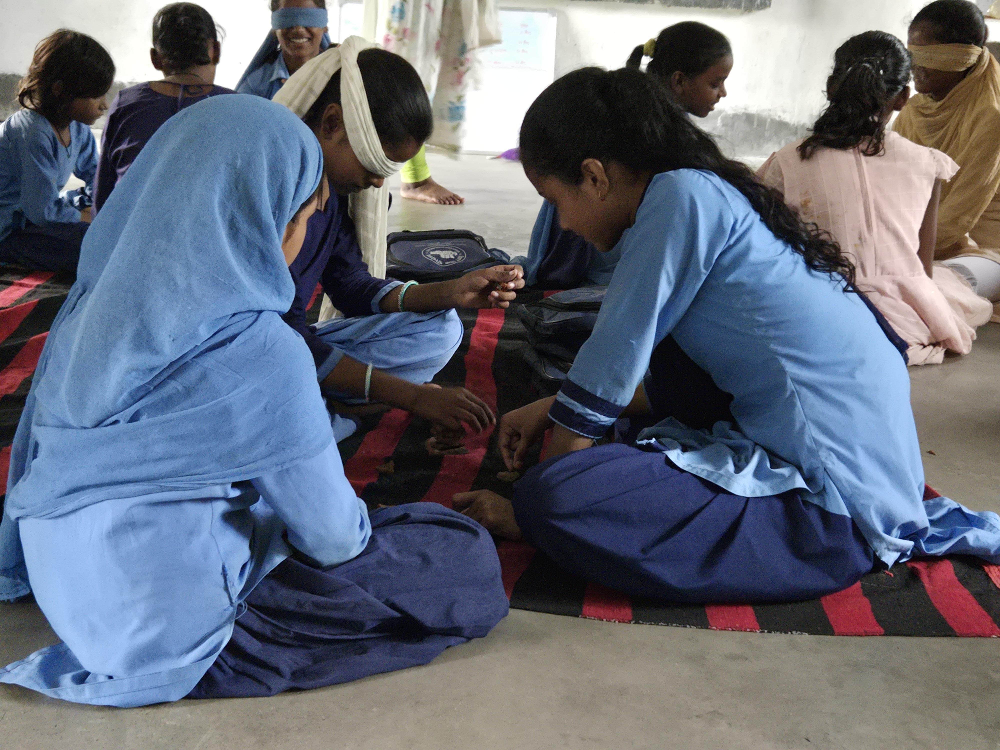
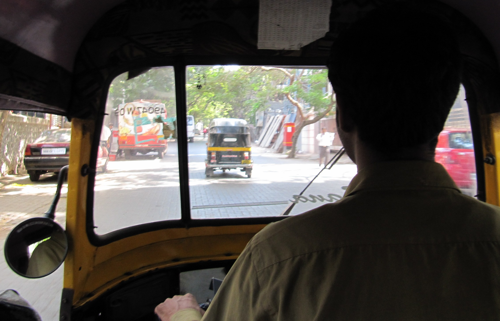

Research
Research

Book Project
Why Women Vote: When and How Clientelism Closes the Gender Turnout Gap (Based on Dissertation)
When do women turn out at equal rates to men? My book project re-investigates this question in the context of developing countries. Existing theories of women’s political participation are largely resource-based, yet in many developing countries, women turn out at par with men in the face of low levels of economic development and female labor force participation, and despite gendered differences in individual-level resource endowments. Based on an in-depth investigation of India, I argue that there is a second path to women’s equal political participation that does not rely on individual-level resources, but instead depends on clientelism and household support for female turnout. Where households are supportive, they can bridge the resource gap for women. Household support, in turn, depends on high levels of clientelist returns to a vote. I provide several pieces of empirical evidence from India consistent with this theory, based on two original surveys and a novel panel dataset on the extent of clientelist party mobilization. I show that female turnout is higher in a poorer and more clientelist state than in a better developed but less clientelist state, and that household support for female turnout – but not other forms of political participation – is high under clientelism. I also demonstrate that increases in levels of clientelist mobilization – measured as a rise in the number of ethnic groups targeted by clientelist parties – leads to smaller gender turnout gaps at the constituency level across several states. My research has important implication for our understanding of the relationship between development and female political participation, as well as the consequences of clientelism.

Working Papers
How Clientelist Party Mobilization Closes the Gender Turnout Gap: Theory and Evidence from India
When are returns to a vote high enough to mobilize female turnout? I develop a typology of clientelist regimes that posits that both the sequencing of the clientelist exchange as well as the source of the clientelist resources determines the value of a vote. Returns to a vote should be highest when clientelist parties rely on post-election resource sharing arrangements that provide selective post-election access to state resources; and lowest when clientelist parties instead bank on privately funded electoral handouts. I test this theory in India, a particularly puzzling case of gender turnout parity. I use the fact that in India, ethnicity is politically salient and clientelist parties purposefully incorporate some ethnic groups into their leadership, while excluding others, to send signals about the future distribution of state resources. Members of ethnic groups who have a co-ethnic in any party’s leadership will expect the highest returns to a vote, and therefore be most likely to support female turnout. Using a novel panel dataset on the number and types of ethnic group incorporation into state-level party leadership of all major parties for all state elections in Madhya Pradesh and Uttar Pradesh from 1977 through 2007, I show that a) the number of ethnic groups incorporated went up over time, with considerable spatial and temporal variation; and that b) a rise in the number of politically incorporated ethnic groups before an election leads to a drop in the gender turnout gap during the election.

Gender, Household Dynamics, and Preference-Consistent Voting in India
Download Manuscript (R&R, CPS)
When women vote for the same party as male household members, does this reflect coercion or independent choice? Evaluating women’s agency in vote choice is especially difficult in non-programmatic party systems, where distinct policy preferences can rationally lead to the same party choice as men. I develop a measure of preference-consistent voting that assesses whether individuals vote for the party they themselves identify as most competent on the issue they prioritize most. Using original dyadic survey data from India, I show that women vote as preference-consistently as men, even when they disagree with male household members. Among inconsistent voters, women are more likely to align with other women than with men. Patterns of agreement in party evaluations are consistent with symmetric persuasion rather than gendered domination. These findings suggest that households function as deliberative networks and demonstrate the value of measuring agency through internal consistency rather than vote alignment.

Netting Out Exclusion: Deadwood, Under-Enrollment, and Voter Roll Quality in India
- 2025 MPSA Best Paper by an Emerging Scholar Award
Download Manuscript (under review)
Democracies are judged by their turnout; yet before anyone can vote, they must be registered. We know little about who is on the voter list and who is not, especially outside the U.S. Standard accounts explain non-registration as a matter of costs. I argue that state capacity matters too: When a roll retains obsolete entries, this “deadwood” can mask – and sometimes produce – under-enrollment. Once rolls contain deadwood, aggregate measures of list quality – comparing population to enrollment totals – become uninformative, because they only capture net error. Recovering gross errors requires descending to the individual record. Comparing two full village censuses in India against the official electoral rolls, I show that both under-enrollment and deadwood co-exist, and that both errors fall disproportionately on women because of patri-local marriage norms and hyper-local registration. I trace the persistence of these errors to perverse incentives for street-level bureaucrats maintaining the rolls.

Work in Progress
Holding up Half the Sky? How Elites Influence Gender Attitudes in Rural India
(with Anjali Thomas, Georgia Tech; Charles Hankla, GSU; Sayan Banerjee, Texas Tech)
Working paper available upon request, download pre-analysis plan
A major obstacle to alleviating gender disparities in education in many developing countries is parents’ attitudes: parents are often reluctant to educate girls due to prevailing patriarchal norms. We investigate one avenue for changing parental attitudes towards girls’ education commonly used by governments: elite messaging that encourages parents to foster their daughters’ education. In a large-scale survey experiment (N=2,300) in rural Bihar, India, we partner with real politicians and bureaucrats to record video messages and randomize these messages across households. We then capture the effect of these messages on parental dispositions toward girls’ education through a variety of attitudinal and behavioral measures. Despite the light-touch nature of the intervention, results from pre-registered analyses show that elite messaging was effective in shifting parental attitudes on one important education-related decision: fostering their daughters’ digital access to education. We interpret our results as suggesting that this decision is particularly amenable to be influenced by elite messaging since it involves changing behavior involving relatively low perceived social costs. Meanwhile, we find little effect of elite messaging on education-related attitudes that involve highly salient, publicly visible decisions such as daughters’ level of education and future occupation choice. Our research highlights the type of behavioral change that can and cannot be molded by elite messaging in a setting with ingrained patriarchal norms.

What Holds Girls Back? Norms and Girls’ Education in Bihar
(Data collection in progress, baseline concluded)
Bihar has the lowest female literacy rate in India, and girls there still leave school early, even though the state has made schooling almost free, subsidizing uniforms, distributing bicycles, and paying cash to families whose daughters stay enrolled. This project argues that the binding constraint is not the cost of schooling but the social norms around it: not what a mother privately believes, but what she thinks her neighbors do and expect of her. Separating personal conviction from these social expectations is at the heart of this project.
I designed a randomized evaluation of a program meant to change these social norms. I-Saksham, an NGO operating in rural Bihar, runs two-year interventions during which trained community leaders work with teenage girls, their mothers, and the village community at large to encourage female education. The RCT spans 80 villages across 3 districts (40 treatment and 40 control), and follows 650 households from baseline to endline. Crucially, we interview both the mothers and their teenage daughters, letting us trace changes not only in mothers’ attitudes and social norms perceptions, but also in girls’ efficacy and educational outcomes.

Work and the Vote: Does Welfare Expansion Improve Turnout?
(with Varun Karekurve-Ramachandra, USC)
(Data collection in progress)
Does the expansion of the welfare state increase or depress political participation in developing countries? In many developing countries, where state capacity for taxation is low and wealth redistribution therefore limited, the poor vote at higher rates than the rich because it is easier (and cheaper) for political elites to motivate the poor to turn out. Welfare provisions that improve the overall standard of living, therefore, might make it harder for elites to elicit turnout. On the other hand, prior research suggests that higher welfare provisions make the state more visible to ordinary citizens, particularly in rural areas, and therefore drive up expectations of political responsiveness and benefit provision. This could motivate more citizens to turn out to voice their demand for new (or continuing) benefits. We leverage the staggered rollout of India’s National Rural Employment Guarantee Scheme (NREGS), the largest public works program in the world, to test whether positive income shocks for rural laborers affected turnout.
